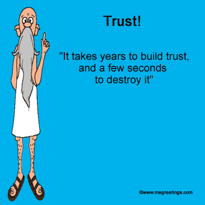

Motivation

Context
- The TPTP and TSTP - problems and solutions from first-order ATP
- The TPTPWorld - tools for the TPTP and TSTP
- The TPTP language - focussed on logical aspects
- The Inference Web - semantic web based provenance infrastructure
- The IW Toolkit - tools for the IW
- The PML language - focused on provenance information
Building Bridges
- Parallels in terms of deduction processes
- TSTP provides large corpora for IW
- IW provides new tools for processing TSTP proofs
- (One) XML format for TSTP proofs
- Links to provenance information
- Search tools for the TSTP
- New views on proofs